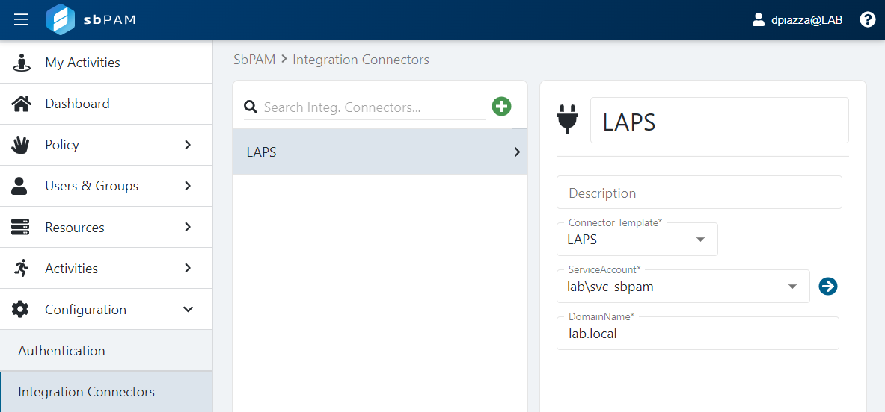
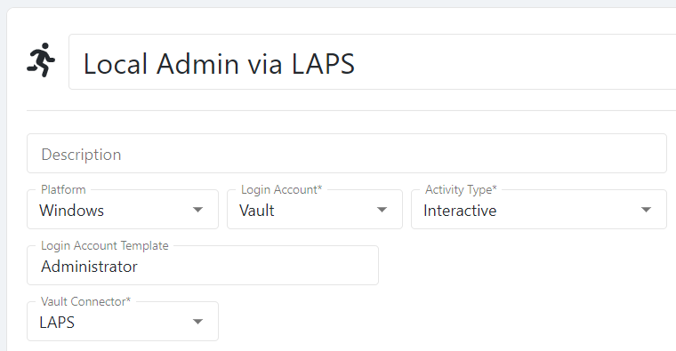

Summary
This article outlines how to integrate SbPAM activities with the Microsoft Local Administrator Password Solution (LAPS) solution, enabling SbPAM activities to access Windows resources using the built-in Administrator being managed by LAPS.Instructions
LAPS should already be installed on the desired Windows workstations and servers. It's presumed these computers are located in specific Organizational Units (OUs) in Active Directory.A service account will need to be created, or an existing account can be used, that will be used by SbPAM to integrate with LAPS. This service account will need the ability to read and reset LAPS passwords, delegated via the following PowerShell cmdlets from Microsoft (available via the LAPS UI fat client installer):
Set-AdmPwdReadPasswordPermission -OrgUnit "<laps_ou>" -AllowedPrincipals "<service_account>"
Set-AdmPwdResetPasswordPermission -OrgUnit "<laps_ou>" -AllowedPrincipals "<service_account>"
In the commands above, <laps_ou> should be replaced with the OU containing the computers being managed by LAPS, and <service_account> should be replaced by the service account that will be used during LAPS integration configuration in SbPAM.
For example, if all computers managed by LAPS are in a "LAPS PCs" OU in Active Directory, and the desired service account is "svc_sbpam@lab.local", then the commands would look like:
Set-AdmPwdReadPasswordPermission -OrgUnit "LAPS PCs" -AllowedPrincipals "lab\svc_sbpam"
Set-AdmPwdResetPasswordPermission -OrgUnit "LAPS PCs" -AllowedPrincipals "lab\svc_sbpam"
The LAPS integration can now be configured in SbPAM.
Log-in to SbPAM as an admin. If the service account used in the LAPS PowerShell commands has not been added to SbPAM, then that will be the first step via Configuration > Service Accounts.
Next, navigate to Configuration > Integration Connectors. Create a new connector, and select LAPS from the Connector Template dropdown. Select the service account that has read and reset permissions for the LAPS OU(s) from the ServiceAccount dropdown. Finally, add the DomainName (ex. lab.local) and click Save.

Next, navigate to Activities so an activity can be created that provides built-in Administrator access to a Windows resource that's managed by LAPS.
Create a new activity and change the Login Account dropdown to Vault. For the Vault Connector, select the name of the LAPS connector create in the previous step. Finally, set the Platform to Windows and make sure the Login Account Template matches the expected built-in admin account name (in most cases this will be the default value of "Administrator").

Add any other desired actions to the activity. The last step is to create an Access Policy that determines which SbPAM users can provision this activity session for which resources. Simply create as many Access Policies as desired with combinations of SbPAM users, the previously created LAPS activity, and Windows resources managed by LAPS.
The LAPS activity can now be provisioned by users added to the aforementioned Access Policies, which will allow users to RDP to Windows resources managed by LAPS as the built-in admin account.
When a LAPS-integrated session ends, SbPAM will trigger a password rotation via LAPS, ensuring the built-in admin account for the accessed resource is secure.